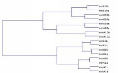

Openopen a table of data. The columns have to be separated by <tabulation> and/or <;> - the lines by <carriage return> and/or <line feed>. The numbers are read as well in french format as in english. The presence or absence of columns and lines headings is managed -in case of absence the lines and/or the columns will be numbered.Savesave the current table of data - if this one has been modified, the modifications will become permanent.Save assame thing as Save but ask before for a new file name (the initial file will not be modified).Exportsub-menu which allows to save the data under various format.Quitas its name indicates it....
The first three actions make it possible to apply various functions to the whole of the data.To logarithm
transform the data into their logarithm. Currently, the presence of negative or null numbers among the data is not very well taken into account ( their logarithm is fixed at zero).To square roottransform the data into their square root (same remark as previously concerning the negative numbers).To rankgiven a column, associate to each number its rank - manage the ex-aequos correctly so that the sum of the ranks of a column is always the same one.Extractallow to select a subset of lines and to remove the others of the table.Sort linessort the lines in the alphabetical order of their headings - with no interest if the headings are numbered.
The ANOVA menu
Gather the functions related to variance analyzis of the table. Before being able to use them, it is necessary to open or define the set of factors used for this analyzis: the design. This last one can be saved and reloaded for a future utilization (see item Design).
Compute global ANOVA
compute the analyzis of variance asking before the desired order of interaction. A window presents the table resulting from this computation in which a menu makes it possible to save the results in text format.Compute local ANOVAbeing given two factors f1 and f2 (here generally f1 will be the factor "gene"), compute in each class of the partition associated with f1 the analyzis of variance of order 1 of this subset of data. Only the results relating to the factor f2 are displayed.Local ANOVA graphics (F)being given two factors f1 and f2 (here still generally f1 will be the factor "gene"), represent each class of the partition associated with f1 like a point of which :Local ANOVA graphics (P-value)In this representation the value F of a gene is the slope of the line joining the origin and the corresponding point. So, to evaluate quickly this quantities, we represent lines with slopes associated to F with probabilities of 5/100, 1/100 and 1/1000.
- the abscissa is the ratio between the variation due to the factor f2 (only on the subset formed by the considered class) normalized by the total variation of the class,
- the ordinate is the residual at order 1 (with no interaction), divided by the same denominator as the abscissa.
being given two factors f1 and f2 (here still generally f1 will be the factor "gene"), represent each class of the partition associated with f1 like a point which :Design
- abscissa is the same as previously.
- ordinate is the logarithm of the P-value associated with this sum of squares.
sub-menu which makes it possible to define, to save, and to load the under-tables of the factors of the ANOVA.
Enter :
A "dialog box" ask you first to enter the number of factors of your design,
and then, for each factor, to enter the name of the factor and to precise the type of partition among the four following possibilities :If you choose the third or the fourth type of partitioning (partition the lines or columns in N classes), then the dialog goes on and ask to define the N-1 first classes of the partition.
- partitioning all the lines
- partitioning all the columns
- partitioning the lines in N classes
- partitioning the columns in N classes
Once entered, the design can be saved and reopened via the two others items of the menu (Save and Load).
The software does not carry out itself classifications. However, it can call external modules which perform classification from a file containing a table of data, and return a file containing a standard description of the dendrogram. This resulting file is then interpreted and displayed by our software, which make it possible to save it in JPEG format. An example:It is thus necessary to define the names (which will be displayed in the menu) and especially the paths of the external modules, via Preference menu. 
3 items are proposed :
- PCA
- Correlation between columns (display columns in a plane which axes are two lines)
- Correlation between lines (display lines in a plane which axes are two columns)
Allow to show and hide the ANOVA or current tasks windows.
You would not be there without knowing it.....Index